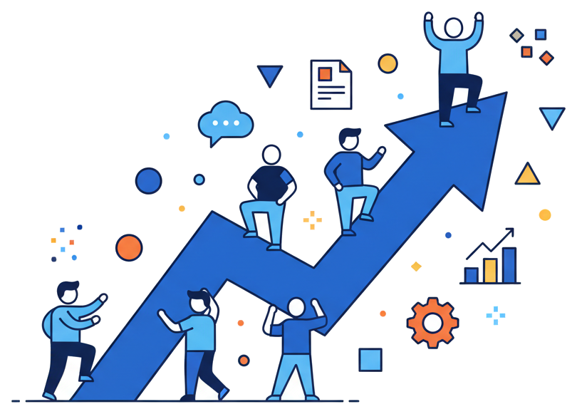

製造業のAI活用事例集｜一覧2ページ＋詳細10ページ／事例はすべて各社の公開情報にもとづく
製造業の
AI活用事例集
公開情報でみる、国内メーカー10社の取り組み
2026年9月版 ｜ バイテック法人AI研修


Contents
目次
本資料は各社が公開している情報をもとにバイテック法人AI研修が編集したものです。掲載している数値はすべて各社の公表値であり、当社による測定値ではありません。掲載企業との取引関係や、各社による推薦を示すものではありません。
製造業 活用事例
成果が出ているのは設計・品質保証・技術伝承。
熟練者しか分からない情報を、誰でも引き出せる形にしている。
| No. | 企業 | 活用領域 | 取り組み | 公表されている成果 |
|---|---|---|---|---|
| 01 | パナソニック コネクト | 全社活用 | 自社AIアシスタント「ConnectAI」を国内全社員 約11,800人へ展開。議事録・提案書・設計書作成などで年間361万回利用 | 2025年度に78.8万時間を削減（総労働時間の3.4%） |
| 02 | 日立製作所 | 品質保証 | 熟練者の暗黙知を引き出し、設備トラブルの過去事例検索と対応レポート作成を支援するAIエージェントを構築（大みか事業所） | 事例の検索時間を約90%削減。レポート作成・原因分析も80%以上短縮 |
| 03 | ダイキン工業 | 設備保全 | 日立と協創し、工場設備の故障診断を支援するAIエージェントを開発。試験運用を開始 | 実証実験で10秒以内に90%以上の精度で回答 |
| 04 | 旭化成 | 研究開発 | 論文・特許から用途を自動抽出するAIと、有望な候補を絞り込む生成AIを開発。製造現場の技術伝承にも活用 | 用途候補の選別時間を従来の約40%に短縮 |
| 05 | 日本精工（NSK） | 品質保証 | 表形式の品質トラブルデータを扱う参照アプリを自社開発。ハルシネーション等を踏まえた運用ルールも整備 | 機能設計から約6か月で本番運用を開始。国内5,000名超へ展開 |
出典：各社の公式発表（プレスリリース・ニュースルーム・公式サイト）。パナソニック コネクト（2026.7.29）／日立製作所（2026.6.4）／日立製作所・ダイキン工業（2025.4.22）／旭化成（2024.12.9）／日本精工（2025.6.23）／味の素（DXサイト）／味の素冷凍食品／LIXIL（DXサイト）／花王（2026.8.17ほか）／キリン（2026.2.27ほか）。数値は各社の公表値であり、当社による測定値ではありません。社名・製品名は各社の商標です。
製造業 活用事例
全社への展開で差がつく。
利用率を上げる仕組みを持つ企業が、削減時間を数字で示せている。
| No. | 企業 | 活用領域 | 取り組み | 公表されている成果 |
|---|---|---|---|---|
| 06 | 味の素 | 全社活用 | 専用ツール「AJI AI Chat」を全従業員に導入し、社内情報も参照可能に。勉強会・コミュニティに約1,200名が参加 | 業務の標準化・半自動化で年間 約1,000時間強の削減を見込む |
| 07 | 味の素冷凍食品 | 現場浸透 | 70以上の業務テーマを組織横断で推進し、現場主導で活用を広げている | 社内利用率80%超を毎月維持 |
| 08 | LIXIL | 全社＋工場 | 「LIXIL Ai Portal」を展開。大和工場では在庫管理・生産段取り・製品検査を一元管理するツールを内製 | 毎日9,000名超が利用。大和工場は作業時間20%減・生産量30%増 |
| 09 | 花王 | 全社活用 | セキュアな「Kao AI Chat」を全社員が利用。需要計画の立案を支援するAIエージェントも導入 | グローバル約16,000人が活用。化粧品の製品在庫を2027年までに約25%削減へ |
| 10 | キリン | 全社活用 | 自社開発「Buddy AI」を国内従業員 約1万人へ展開。新卒から役員まで対象の生成AI教育プログラムも実施 | 2025年10月時点で平均利用率70% |
出典：各社の公式発表（プレスリリース・ニュースルーム・公式サイト）。パナソニック コネクト（2026.7.29）／日立製作所（2026.6.4）／日立製作所・ダイキン工業（2025.4.22）／旭化成（2024.12.9）／日本精工（2025.6.23）／味の素（DXサイト）／味の素冷凍食品／LIXIL（DXサイト）／花王（2026.8.17ほか）／キリン（2026.2.27ほか）。数値は各社の公表値であり、当社による測定値ではありません。社名・製品名は各社の商標です。
詳細事例｜製造業
パナソニック コネクト全社員に配って終わりにせず、「使われ続ける」仕組みをつくった
取り組み
自社向けAIアシスタント「ConnectAI」を国内全社員に展開。社内情報を参照できるよう自社特化を進めた
議事録作成・コード生成・ログ分析・提案書作成・設計書／仕様書作成など、個人業務での利用を広げた
図面と設計仕様の照合など、業務特化のAIエージェントへ展開。2026年度はプレゼン生成機能も追加予定
成果が出た理由
「聞く」から「頼む」へ。調べ物の相談役から、作業そのものを任せる相手へ使い方が移った
1回あたりの削減時間が33分（前年比1.2倍）に伸び、効果の大きい業務へ用途が移動した
月間ユニークユーザー率61%（前年比12ポイント増）。一部の人でなく全社の日常業務に定着
2025年度 削減時間
78.8万時間
総労働時間の3.4%に相当
年間利用回数
361万回
前年比 1.6倍
1回あたり削減
33分
前年比 1.2倍
月間利用者率
61%
前年比 12ポイント増
削減時間の推移
2024年度 → 2025年度
44.8万h → 78.8万h
この先の目標
AIエージェントの活用範囲を広げ、2030年に総労働時間の10%削減をめざす
自社に置き換えるなら（当社の見解）
配布ではなく用途を決める
議事録・提案書・仕様書など、頻度が高く時間のかかる業務を先に指定すると使われ方が定まります。
利用率を指標に置く
削減時間だけでなく「何人が毎月使ったか」を見ると、定着しているかが早く分かります。
聞く→頼むへ引き上げる
調べ物で止まらず、作業を任せる使い方まで教育で引き上げると1回あたりの効果が伸びます。
出典：パナソニック コネクト プレスリリース「AI活用で総労働時間の3.4％削減」（2026年7月29日）ほか同社発表。数値は各社の公表値であり、当社による測定値ではありません。「自社に置き換えるなら」は当社の見解です。
詳細事例｜製造業
日立製作所熟練者の暗黙知を形式知化し、経験の浅い担当者でも初動対応できる状態へ
背景と課題
人材不足と世代交代が進む一方、製品・システムは高度化・複雑化。求められる知識は専門化していた
トラブル対応や原因分析は熟練者の経験と判断に依存し、担当者の経験値で対応品質が揺れていた
取り組み
AIプロフェッショナルと現場の熟練者が連携し、熟練者が持つ100件以上の業務知見をAIへ組み込んだ
「どのキーワードで、どの順序で探すか」という探索プロセスそのものを形式知化
自社工場に最初のユーザーとして導入する「カスタマーゼロ」で磨き上げ、2026年4月に外販を開始
トラブル事例の検索
60→5分
1件あたり。約9割削減
対応レポート作成
120→15分
8割以上削減
不具合の原因分析
16→3時間
8割以上削減
組み込んだ業務知見
100件以上
熟練者が持つノウハウ
この先の展開
品質保証だけでなく設計・製造・保守へ同様のサービスを拡大予定
ナレッジを上流工程へ戻す好循環サイクルの確立をめざす
自社に置き換えるなら（当社の見解）
暗黙知は聞き取りで出す
AIに入れる前に、熟練者が何をどの順で見ているかを言語化する工程が要ります。
まず自社で使い切る
社内で磨いてから外に出す進め方は、精度と現場の納得感の両方を上げます。
初動の速さを指標にする
検索1件60分が5分になるように、詰まりやすい工程を1つ選ぶと効果が測れます。
出典：日立製作所 ニュースリリース「熟練ノウハウを形式知化し、品質保証業務を大幅に効率化するAIエージェントをHMAX Industryとして提供開始」（2026年6月4日）。数値は各社の公表値であり、当社による測定値ではありません。「自社に置き換えるなら」は当社の見解です。
詳細事例｜製造業
ダイキン工業設備の図面をAIが読める形に変換し、故障診断のノウハウを引き継ぐ
背景と課題
生産年齢人口の減少にともない熟練技術者が減少。グローバル展開で保全技術者の確保と育成が追いつかない
結果として保全のリードタイム増加と品質のばらつきが課題になっていた
取り組み
蓄積してきた生産設備・ユーティリティ設備の図面をナレッジグラフへ変換し、生成AIが読み取れる形にした
設備の稼働データ（OTデータ）と、日立独自の故障原因分析プロセスを生成AIに学習させた
現場担当者が対話で原因と対策を引き出せるAIエージェントとして、試験運用を開始
回答までの時間
10秒以内
実証実験での確認値
回答の精度
90%以上
故障の原因と対策について
この先の展開
2025年9月までに試験運用を完了し実用化、国内外のダイキン生産拠点へ展開
日立はLumadaソリューションとして製造業全般へ展開する方針
自社に置き換えるなら（当社の見解）
図面や帳票から始める
紙やCADに眠る情報をAIが読める形にする工程が、実は成果の分かれ目になります。
現場の判断プロセスを組む
データだけでなく「どう切り分けるか」の手順を学習させると回答が実用レベルになります。
拠点展開を前提に設計する
1拠点で作って終わりにせず、横展開できる形で作ると投資が回収しやすくなります。
出典：日立製作所・ダイキン工業 ニュースリリース「ダイキンと日立が協創、工場の設備故障診断を支援するAIエージェントの実用化に向けた試験運用を開始」（2025年4月22日）。数値は各社の公表値であり、当社による測定値ではありません。「自社に置き換えるなら」は当社の見解です。
詳細事例｜製造業
旭化成材料の用途探索と、現場の危険予知。研究開発と製造現場の両方で使う
背景と課題
熟練社員の高年齢化と退職により、ノウハウの継承が課題になっていた
材料の新規用途探索は文献量が膨大で、有望な候補を絞り込む作業に時間がかかっていた
取り組み
専門人材と各事業領域が連携し、用途を自動抽出するAIと、有望な候補を抽出する生成AIを開発
膨大な文献データから6,000以上の用途候補を考案
製造現場では過去事例を読み込ませた生成AIで、経験の浅い従業員でもリスクと対応策を抜け漏れなく洗い出せるようにした
候補の選別時間
約40%に短縮
ある材料での実績
考案した用途候補
6,000以上
膨大な文献データから
この先の展開
作業前の危険予知に加え、画像・音声など工場のセンサーの非構造化データを解析し、作業中の危険回避にも活用予定
自社に置き換えるなら（当社の見解）
探索と選別を分けて考える
候補を出すAIと、絞り込むAIを分けると、それぞれの精度を上げやすくなります。
過去事例が資産になる
トラブルや対応の記録が溜まっているほど、経験の浅い人を引き上げる効果が出ます。
研究と現場の両輪で使う
一部門に閉じず、研究開発と製造現場の両方で使うと社内の理解が進みます。
出典：旭化成 ニュースリリース「生成AIを新規用途探索の自動化や製造現場の技術伝承において活用開始」（2024年12月9日）。数値は各社の公表値であり、当社による測定値ではありません。「自社に置き換えるなら」は当社の見解です。
詳細事例｜製造業
日本精工（NSK）専門性が高く読み解きにくい品質データを、誰でも扱える形にした
背景と課題
品質トラブルデータは専用DBやレポートで管理され、形式が定まらず専門性が高い
因果関係を読み解くことが難しく、必要な情報にたどり着ける人が限られていた
取り組み
約4,000件の品質トラブルデータについて、グラフによる可視化と生成AIによる要約を搭載したアプリを自社開発
自社専用の生成AI環境に構築し、ハルシネーション等のリスクに備えてAI品質コントロールと業務運営ルールを策定
アジャイル開発により、機能設計から約半年で本番運用を開始
情報要約までの時間
約30秒
データ到達から要約生成まで
対象の品質データ
約4,000件
蓄積されたトラブルデータ
利用対象
5,000名以上
国内社員
開発期間
約6か月
技術検証から本番運用まで
この先の展開
国内外の拠点での活用と、回答精度・検索性の向上など機能拡充を予定
自社に置き換えるなら（当社の見解）
ルールを先に決める
誤答リスクへの対処方針を決めてから配ると、現場が安心して使えます。
表形式のデータも対象になる
文章だけでなく、表で溜まった業務データも生成AIの入口になります。
小さく速く出す
半年で本番に出す進め方は、現場の熱量が冷めないうちに定着させる効果があります。
出典：日本精工 ニュースリリース「生成AIを活用した品質トラブル参照アプリケーションを自社開発し運用開始」（2025年6月23日）。数値は各社の公表値であり、当社による測定値ではありません。「自社に置き換えるなら」は当社の見解です。
詳細事例｜製造業
味の素ツール配布と人材育成をセットで進め、全社に生成AIを根づかせる
取り組み
専用ツール「AJI AI Chat」を2023年10月から全従業員に導入。社内情報も参照できるよう機能を強化
DX推進委員会の中に「AI小委員会」を設置し、活用状況の可視化と横展開、セキュリティ判断を担う
生成AI勉強会やコミュニティ活動を実施し、約1,200名が参加
成果が出た理由
ツールを配るだけでなく、業務フローの見直しとセットで進めた
エクセル作業や社内マスタ登録申請などを標準化・半自動化し、削減時間を積み上げた
業務削減の見込み
約1,000時間強/年
業務の標準化・半自動化による
勉強会・コミュニティ
約1,200名
参加した従業員数
グループでの展開
味の素冷凍食品では社内利用率80%超を維持し、70以上の業務テーマを横断で推進
自社に置き換えるなら（当社の見解）
推進する組織を置く
推進する委員会のような旗振り役があると、部署ごとの取り組みが横につながります。
業務の見直しと同時に行う
AIを入れる前にフローを整理すると、削減効果がはっきり出ます。
学ぶ場を継続する
勉強会やコミュニティは、使い方の差が開くのを防ぐ最も確実な手段です。
出典：味の素 DXサイト・統合報告資料ほか同社公開情報。数値は各社の公表値であり、当社による測定値ではありません。「自社に置き換えるなら」は当社の見解です。
詳細事例｜製造業
味の素冷凍食品使われ続けるかどうかを、利用率という一つの数字で管理する
取り組み
70以上の業務テーマを組織横断で設定し、現場主導で活用を広げている
一部の部署に閉じず、組織をまたいでテーマを持ち寄る進め方をとっている
成果が出た理由
2025年3月に社内利用率80%を突破し、以降も毎月80%以上を維持
「誰がどれだけ使っているか」を追い続けることで、導入したが使われない状態を防いでいる
社内利用率
80%超
2025年3月に突破し毎月維持
推進中の業務テーマ
70以上
組織横断で設定
参考：親会社の取り組み
味の素本体では専用ツールを全従業員へ導入し、勉強会・コミュニティに約1,200名が参加
自社に置き換えるなら（当社の見解）
利用率を毎月見る
削減時間より先に利用率を見ると、定着しているかが早く分かります。
テーマを現場に持たせる
上から配るより、部署ごとにテーマを決めるほうが自分ごとになります。
80%を一つの目安に
全社の大半が毎月触っている状態まで来ると、成果の話ができるようになります。
出典：味の素グループ DXサイトほか同社公開情報。数値は各社の公表値であり、当社による測定値ではありません。「自社に置き換えるなら」は当社の見解です。
詳細事例｜製造業
LIXIL全社の土台と工場の現場改善を、どちらも社内の人材で回す
取り組み
生成AIを取り入れた「LIXIL Ai Portal」を導入し、毎日9,000名を超える従業員が活用
社内に生成AIツール開発のエンジニアチームを持ち、生産性向上のツールを自前で提供
大和工場では在庫管理・生産段取り・製品検査を一つのツールで一元管理するシステムを開発
成果が出た理由
「デジタルの民主化」を掲げ、ノーコード開発ツールを全社に開放
2025年3月末時点で開発者9,916名・4,020のアプリが稼働し、現場が自分で課題を解いている
日次の利用者
9,000名超
LIXIL Ai Portal
大和工場の作業時間
20%削減
在庫・段取り・検査の一元管理
大和工場の生産量
30%向上
同上
社内の開発者
9,916名
4,020アプリが稼働
特徴
ツール提供だけでなく、現場が自分でつくる文化を制度として整えている点が特徴
自社に置き換えるなら（当社の見解）
作る側を社内に増やす
外注に頼らず現場が作れるようになると、改善のスピードが変わります。
全社基盤と現場改善は別物
全社ツールの利用者数と、工場の作業時間削減は別々に設計して測ります。
工程をまとめて見る
在庫・段取り・検査をバラバラでなく一つにまとめたことが効果につながっています。
出典：LIXIL DXサイト・ニュースルームほか同社公開情報。数値は各社の公表値であり、当社による測定値ではありません。「自社に置き換えるなら」は当社の見解です。
詳細事例｜製造業
花王全社利用の土台をつくり、次は業務特化のAIエージェントへ
取り組み
セキュアな環境で全社員が使える「Kao AI Chat」を独自開発し、グローバルで約16,000人が活用
需要計画の立案を支援するAIエージェント「Kao-MIKOMIL」を2026年7月から化粧品ブランドで導入
「花王AIガバナンス方針」を策定し、AIを事業変革と価値創出を支える技術と位置づけた
成果が出た理由
全社チャットで土台を作ったうえで、特定業務に効くエージェントへ段階的に進んだ
需要計画では立案リードタイムの短縮に加え、判断根拠の明確化まで狙っている
利用者
約16,000人
グローバルの社員
製品在庫の削減目標
約25%
化粧品事業・2027年までに
この先の展開
事業・生産・物流・販売をデータでつなぎ、在庫運営の効率化を進める
AIガバナンス方針のもとで活用範囲を広げる
自社に置き換えるなら（当社の見解）
土台→特化の順で進める
全社チャットで慣れた後に業務特化へ進むと、現場が受け入れやすくなります。
ガバナンスを先に決める
使ってよい範囲を明文化しておくと、展開のたびに止まらずに済みます。
判断根拠まで出させる
答えだけでなく根拠を出させると、AIの提案を業務で採用しやすくなります。
出典：花王 ニュースリリース「花王、需要計画立案を支援するAIエージェントを開発」（2026年8月17日）、「花王AIガバナンス方針を策定」（2026年7月27日）ほか同社公開情報。数値は各社の公表値であり、当社による測定値ではありません。「自社に置き換えるなら」は当社の見解です。
詳細事例｜製造業
キリン先行部門で磨いてから広げ、教育で利用率を引き上げる
取り組み
自社開発の「Buddy AI」を2024年11月にマーケティング部門へ先行導入
改良・機能追加と従業員のリテラシー教育を経て、2025年5月に展開を拡大。国内従業員 約1万人へ
過去のデータベースや外部の最新情報をもとに、部門ごとの業務に特化した機能を搭載
成果が出た理由
人材育成プログラム「DX道場」を長年続け、学びの場を継続してつくってきた
2025年からは生成AIをテーマに、新卒から役員まで全従業員を対象とした教育プログラムを開始
平均利用率
70%
2025年10月時点
展開規模
約1万人
国内従業員
この先の展開
研究部門ではAIエージェントを研究活動に組み込み、AIネイティブな研究環境の実現をめざす
自社に置き換えるなら（当社の見解）
先行部門で磨いてから広げる
いきなり全社に出さず、1部門で使い勝手を整えると失敗が減ります。
教育を続ける仕組みを持つ
一度の研修で終わらせず、継続的な学びの場が利用率の差を生みます。
役員まで対象にする
経営層が使っていると、現場の取り組みが本気の施策として受け止められます。
出典：キリンホールディングス ニュースリリース・キリンジャーナル（2026年2月27日ほか）同社公開情報。数値は各社の公表値であり、当社による測定値ではありません。「自社に置き換えるなら」は当社の見解です。